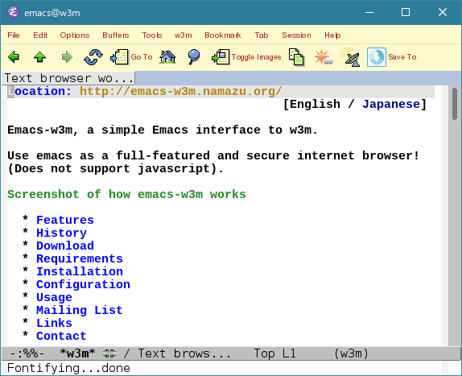

[English / Japanese]

This project uses the cvs[1] version control system, so in order to download the current version from the official source, you need to have cvs installed.
% cvs -d :pserver:anonymous@cvs.namazu.org:/storage/cvsroot login CVS password: # No password is set. Just hit Enter/Return key. % cvs -d :pserver:anonymous@cvs.namazu.org:/storage/cvsroot co emacs-w3m
Source code access with ViewCVS is also available.
emacs-w3m-1.4.4.tar.gz (March 25th, 2005)
emacs-w3m-1.4.3.tar.gz (August 17th, 2004)
emacs-w3m-1.4.2.tar.gz (July 14th, 2004)
emacs-w3m-1.4.1.tar.gz (July 7th, 2004)
emacs-w3m-1.4.tar.gz (April 29th, 2004)
emacs-w3m-1.3.6.tar.gz (July 18th, 2003)
emacs-w3m-1.3.5.tar.gz (July 5th, 2003)
emacs-w3m-1.3.4.tar.gz (June 18th, 2003)
emacs-w3m-1.3.3.tar.gz (October 25th, 2002)
emacs-w3m-1.3.2.tar.gz (September 3rd, 2002)
w3m_el-1.3.1.tar.gz (July 17th, 2002)
w3m_el-1.3.tar.gz (July 7th, 2002)
w3m_el-1.2.8.tar.gz (June 20th, 2002)
w3m_el-1.2.7.tar.gz (June 3rd, 2002)
w3m_el-1.2.6.tar.gz (March 12th, 2002)
w3m_el-1.2.5.tar.gz (March 2nd, 2002)
w3m_el-1.2.4.tar.gz (January 8th, 2002)
w3m_el-1.2.3.tar.gz (December 21st, 2001)
w3m_el-1.2.2.tar.gz (December 6th, 2001)
w3m_el-1.2.1.tar.gz (November 12th, 2001)
w3m_el-1.2.tar.gz (November 6th, 2001)
w3m_el-1.0.tar.gz (May 9th, 2001)
`-lang=many'.
For this to work, you will need to first install package
libmoe. You can
verify whether your copy of w3mmee already meets this requirement by
checking for the presence of `moe-VERSION' and
`lang=many' in response to performing:
w3mmee -version
BITMAP-MULE
package is installed, you can see monochrome bitmap images inline
on an Emacs frame.
here.
Note: You must not use the APEL XEmacs package (which is contained in SUMO) of the versions older than 1.32. If you have already installed such a version, you should upgrade it or replace it with APEL which is linked above.
If you are using XEmacs 21.x, you should install the
gifsicle
program. There is a known bug in all XEmacs 21.x series that it
won't let it display optimized animated gifs correctly or may make
it crash when some kind of an interlaced gif image is displayed.
Emacs-w3m uses the gifsicle program to convert gif data in order to
make it possible to be handled by XEmacs 21.x.
regexp-opt.el(c) module are required. For more
detail, see carefully the next
section about Emacs 19.34.
If you wish to use BITMAP-MULE package to show monochrome images inline on the web pages, we strongly recommend you apply the patch and rebuild Mule. The patch is included in the emacs-w3m distribution. If you don't accept our recommendation, Mule might be stuck. And you wouldn't get out of the difficulty except killing Mule.
regexp-opt.el(c) module are required.
Emacs-w3m requires the new custom package. If you use Emacs 19.34 or Mule 2.3, you have to install it before installing emacs-w3m. When you use Mule 2.3 especially, see also the README.en file which is included in the APEL distribution.
Emacs-w3m also requires the regexp-opt.el(c) module
which might not be provided in the old Emacsen such as Emacs 19.34
and Mule 2.3. If you are using such versions of Emacs, you have to
install the regexp-opt.el(c) module before installing emacs-w3m as
follows:
% cp attic/regexp-opt.el /usr/local/share/emacs/site-lisp % cd /usr/local/share/emacs/site-lisp % emacs -q -no-site-file -batch -f batch-byte-compile regexp-opt.el
(You will likely need to say `mule' instead of `emacs' for the path name and the executable name if you are using Mule.)
Before installing emacs-w3m, check whether your environment meets the requirements.
At the first, run the configure script.
% ./configure
If you've installed APEL, FLIM or something in non-standard
directories other than the default load-path, you
must specify them using the --with-addpath option as
follows:
% ./configure --with-addpath=/opt/share/apel:/opt/share/flim
Next, execute the following commands to install emacs-w3m to an appropriate directory.
% make # make install
If you are using Emacs 21.1 and newer or XEmacs, it is recommended to install icon image files. To do this:
# make install-icons
You can also install emacs-w3m as an XEmacs package using make install-package instead of make install.
% make # make install-package
In this case, you don't have to execute make install-icons.
If you cannot execute the configure script on your
system, or if no make command is available, execute
the following command:
# emacs -batch -q -no-site-file -l w3mhack.el NONE -f w3mhack-nonunix-install
If APEL, FLIM (or any other library) aren't installed in the ordinary places, the installer will leave them out. In such a case, it is necessary to tell those places to the installer as shown below:
# emacs -batch -q -no-site-file -l w3mhack.el //c/share/apel://c/share/flim -f w3mhack-nonunix-install
Emacs-w3m has many configure options, but the minimum that is required
is just to put this line into your ~/.emacs file:
(require 'w3m-load)
Just type M-x w3m, and you can use emacs-w3m.
In order to handle text/html part with emacs-w3m under SEMI MUAs such as
Wanderlust, put the following line in your
~/.emacs file:
(require 'mime-w3m)
For more details, see Info manual, or browse the emacs-w3m customization group within emacs.
The project mailing list, emacs-w3m@namazu.org, is
bi-lingual Japanese / English. It is open to the public, and its
archive is accessible via the emacs-w3m
mailing list archive. You can also subscribe to the
gmane.emacs.w3m newsgroup which is gateway'd to this list
bidirectionally (connect to news.gmane.org using nntp).
If you want to subscribe to this list, check the disclaimer and send a mail containing
subscribe Your Name
(not your email address) in the body to
emacs-w3m-ctl@namazu.org.
To unsubscribe, send a mail containing just
# bye
in the body to emacs-w3m-ctl@namazu.org.
Thanks to many of the other people for the great contributions.
In order to contact us, please send a mail to
emacs-w3m@namazu.org. This
mailing list is gateway'd to the
gmane.emacs.w3m newsgroup bidirectionally and accepts even messages
posted from nonsubscribers.